Halbert Ad Teardown: 20 Ads Worth Stealing From
- Top patterns: name the crowd in the first words, reframe a fix they already pay for, and offer a free diagnostic with a “no pressure” promise.
- Closest to BW: Culligan's “Before Another Beauty Product…” (S01) is close to copy-ready for South Florida. Its free in-home water test offer matches what biscaynewater.com already promises.
- Before launch: confirm the $69/mo financing (the site shows $111/mo) and one review count (the site shows both 100+ and 75+). See Gaps.
Category 1: Health ecom (supplements, skin, hair, sleep, wellness)
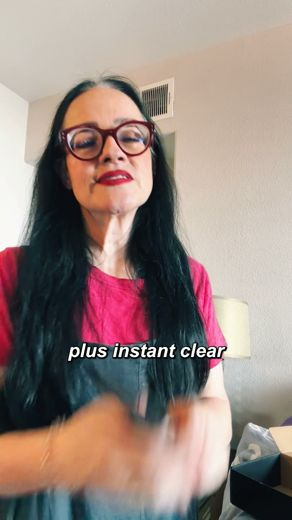
1. Shield Labs
Hook“JUST IN: Mom's new #1 answer to teen acne.” (headline: “Clear Skin or Refund”)
CTAButton: Get Offer. Copy: “Join 270,000+ young men in clearing your acne and reclaiming your confidence with Shield, 60% off exclusively at MyShieldSystem.com”
AvatarMothers of teen boys with acne (copy speaks to mom; Foreplay tags the user as 13–19). EmotionWorry for her son's confidence, then relief.
Offer60% off. The video skit lists free body wash, pimple patches and a “100 day guarantee” plus free shipping (from transcript).
ProofNamed review: “My son has very sensitive skin and has breakouts since he was 14. We started him on Shield only about two weeks ago and he already feels and sees the difference.” - Bianca. Claim of 270,000+ users.
HalbertSells to the person who pays (mom), not the user. Risk reversal is the headline itself. The skit (“Text me next time before you buy stuff”) is a plain-talk family moment, not a production piece.
Crowd ✓ Emotion ✓ Hook ✓ Promise ✓ Proof ✓ Offer ✓ Risk reversal ✓ CTA ✓
For BWTalk to the South Florida mom, not the homeowner: “Miami moms: before you buy another lotion for bath-time dry skin, test your water.” Put the risk reversal up top: “Free in-home water test. No obligation.” (both confirmed on biscaynewater.com).
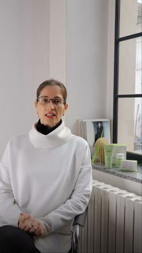
2. Codex Labs
Hook“🚨IF YOUR CHILD HAS ECZEMA, STOP SCROLLING🚨”
CTAButton: Learn More. Copy: “If you've tried everything else, try the one guided by science and a parent's love.”
AvatarParents of children with eczema (Foreplay: parents 25–45). EmotionExhaustion and distrust (“You've tried enough products to stop believing what's written on the label.”).
OfferNo discount in the copy. Leads to an education page on eczema in children and teens.
Proof“first and only eczema brand to hold the National Eczema Association Seal of Acceptance and pass the independent MyMicrobiome certification.” Founder: “Dr. Barbara Paldus, a Stanford PhD and scientist,” whose son had a reaction to baby products. “Clinically tested… Steroid-free. Fragrance-free.”
HalbertThe hook filters the crowd in five words. Proof is third-party, not self-praise. The founder's own child gives the brand a reason to exist that a parent believes.
Crowd ✓ Emotion ✓ Hook ✓ Promise ~ Proof ✓ Offer ✗ Risk reversal ~ CTA ~
For BWLead with third-party proof BW actually has: “NSF-certified components and certified installers” and the 10-year tank and valve warranty (both on the site). If an owner has a real family reason for starting BW, tell it in their own words. Owners need to supply it, so don't write one for them.
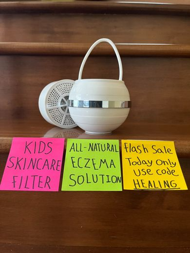
3. Tubo (bath filter)
Hook“didn't know this when I had my first baby, so if it's new to you, you're not alone.⬇️⬇️” On-image sticky notes (seen in thumbnail): “Kids skincare filter” / “All-natural eczema solution” / “Flash sale today only use code HEALING”.
CTAButton: Shop Now. Copy: “Click the link below to check it out!”
AvatarNew moms, 25–34 (Foreplay). EmotionGuilt and protectiveness, softened by “you're not alone.”
OfferUp to 50% off plus a free gift.
ProofFirst-person story: “My kids used to get dry skin, itchiness, and red patches after baths… within two weeks, their skin was soft and healthy again!” No third-party proof.
HalbertThe closest ecom ad to BW's niche. A confession hook (“didn't know this”) removes blame, so the reader keeps reading. The handwritten sticky notes look like a real mom made them, not an agency.
Crowd ✓ Emotion ✓ Hook ✓ Promise ✓ Proof ~ Offer ✓ Risk reversal ✗ CTA ~
For BWMake the whole-home version as a sticky-note static on a South Florida bathroom counter: “Didn't know this when we moved to Miami: bath water is treated with chlorine.” Make no medical promise. Point to “Get your FREE in-home water test.” (BW's site says the test covers chlorine among 14 contaminants.)
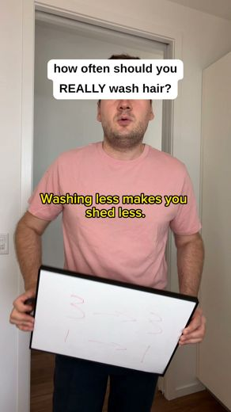
4. James Kilgour, MD (hair care)
Hook“If seeing hair in your hands and drain has made you afraid to wash, washing less is the wrong answer.” Video opens: “Washing less makes you shed less…” and uses spaghetti strands as a live demo.
CTAButton: Learn More. Copy: “Click Learn More to take it before your next wash.”
AvatarWomen 45–65 in menopause with thinning hair (Foreplay). EmotionFear and embarrassment (“thinning hair was becoming harder to hide”).
OfferA free two-minute “Strand Quiz.” “No email. No sign-up.”
ProofBrand-stated results: “61% less shedding, 37% more visible volume after one wash and 70% stronger hair against breakage.” Stanford background. Transcript cites a study of 1,099 women. Hands-on spaghetti demo.
HalbertIt names the exact behavior the reader is doing wrong, then proves it with a kitchen-table demo. Promise is specific. The quiz is a low-risk first step, with no email gate.
Crowd ✓ Emotion ✓ Hook ✓ Promise ✓ Proof ✓ Offer ✓ Risk reversal ✓ CTA ✓
For BWBW already has a 60-second quiz at biscaynewater.com/quiz (live today). Do a kitchen demo the same way: a chlorine test strip in a glass of South Florida tap water, then “Take the 60-second quiz before your next shower.” Keep the ad price-free, even though the quiz shows a price after it's done.
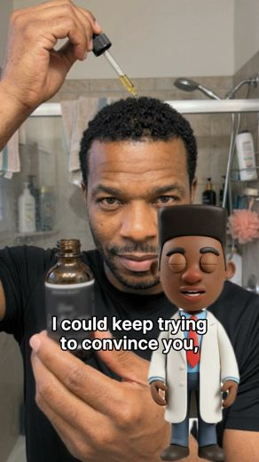
5. Rennora Beauty
Hook“How Black Men Are Stopping Hair Loss!” + customer quote “My corners were pulling back 4 months ago... THIS WORKS!!!”
CTAButton: Learn More. Copy: “Try Rennora Hair Growth Serum risk-free for 120 days.”
AvatarBlack men 25–54 with a receding hairline or bald spots (Foreplay). EmotionEmbarrassment, then confidence (“My confidence is coming back.”).
Offer120-day risk-free trial.
ProofLong customer quote. The video names customers and their results (e.g., “Williams growth from balding to braids in nine months,” from transcript). Three-step mechanism: inflammation, blood flow, protection.
HalbertThe crowd is named so tightly that the right reader can't scroll past. Mechanism steps make the promise believable. The voiceover says “I have receipts,” then shows them.
Crowd ✓ Emotion ✓ Hook ✓ Promise ✓ Proof ✓ Offer ✓ Risk reversal ✓ CTA ✓
For BWName the crowd that tightly, one ad per group: “Pinecrest homeowners on well water…”, “Broward condo owners…”, “Miami Beach families with a pool…”. Follow with a real BW before/after (customer photos from installs, with permission) and a 3-step explanation of the install.
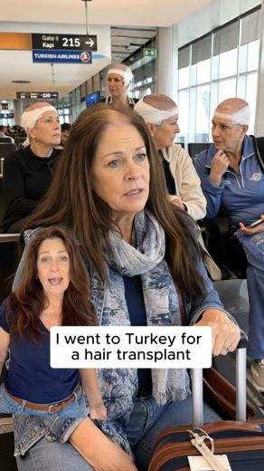
6. H-Regrow 2.0 (page: “Hair Regrowth Tips”)
Hook“Nobody tells you it happens gradually.” Video hook: “I went to Turkey for a hair transplant, ended up in the parking lot with the surgeon's receptionist listening to her tell me not go through with it.”
CTAButton: Shop Now. Copy: “You don't have to accept this as ‘just what happens.’ 👇”
AvatarWomen in menopause with thinning hair (narrator says she is 63). EmotionShock (“the day a photo stops you cold”) and loss of control.
OfferLanding URL path says “2-4-Free”. Copy: “90-day money-back guarantee.”
Proof“4,000+ five-star Trustpilot reviews.” Delivery-mechanism story (water-based, liposomal). Note: the page name is a generic advertorial page, so the narrator's story can't be verified.
HalbertA slow-problem story the reader recognizes in her own mirror. Every line moves toward one picture. Risk reversal is clear.
Crowd ✓ Emotion ✓ Hook ✓ Promise ~ Proof ~ Offer ✓ Risk reversal ✓ CTA ✓
For BWThe same “it happens gradually” story fits hard water: a little more crust on the faucet, spots on the shower glass, a water heater that quietly loses life. BW's FAQ says “South Florida municipal water averages 200 to 350 ppm hardness.” Owners should confirm the source before an ad uses that number.
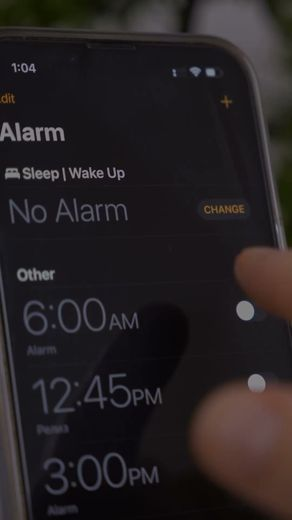
7. Winks Sleep
Hook“It's 3am. Every tab is open. You went down easy four hours ago — and now you're wide awake in the dark doing tomorrow's to-do list. Sound familiar? 💤”
CTAButton: Shop Now. Copy: “Start now at getwinks.com — because something calmer is possible, mama.”
AvatarTired mothers 25–45. The landing slug “3am-peri” suggests perimenopause. EmotionExhaustion and frustration.
OfferNo discount in the copy.
ProofNamed ingredients with doses (e.g., “AlphaWave® L-Theanine 200mg”), “Doctor-formulated, made in the USA,” “deliberately melatonin-free.”
HalbertIt opens on the exact moment the reader lives (Halbert's “enter the conversation already in her head”). The specific doses read as believable, not hype.
Crowd ✓ Emotion ✓ Hook ✓ Promise ~ Proof ✓ Offer ✗ Risk reversal ✗ CTA ~
For BWOpen on a South Florida mom's exact moment: “It's 7am. Lunchboxes are out, and you're hauling another case of water in from the car.” BW's FAQ says RO removes the need for bottled water. Back it with the 14-contaminant test, not hype.
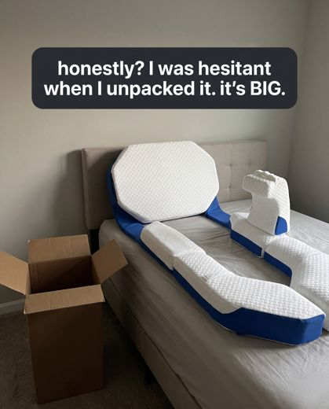
8. Doctor Trigger (Modular Pillow)
Hook“A doctor's solution for those who need more than just a pillow for deep sleep... 👇” On-image text: “honestly? I was hesitant when I unpacked it. it's BIG.”
CTAButton: Learn More. Copy: “Try it risk free for 120 nights ✨”
AvatarSide sleepers with shoulder, neck or arm pain. EmotionFrustration (“But I've tried everything...”).
Offer120-night guarantee.
ProofDoctor authority and a symptom checklist. “My patients have discovered” list, with no numbers given.
HalbertThe image admits the main objection (“it's BIG”) before the buyer says it. Risk reversal is the headline. The checklist lets readers find themselves in it.
Crowd ✓ Emotion ✓ Hook ✓ Promise ~ Proof ~ Offer ✓ Risk reversal ✓ CTA ✓
For BWName the tank objection first: “Honestly? We get it. It's a tank in your garage.” Then: one system treats “shower, laundry, kitchen, and ice maker” (site copy), backed by the 10-year tank and valve warranty.
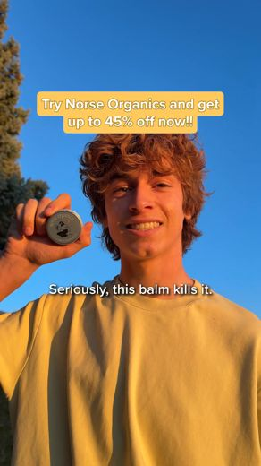
9. Norse Organics
Hook“My doctor said, ‘It's just genetics,’ when my skin started breaking out in my 30s. She was wrong.”
CTAButton: Shop Now. Copy: “✨ Try Kill Acne & Redness Ritual, with a 60-day money-back guarantee (40% OFF)”
AvatarWomen 30–49 with adult acne (Foreplay). EmotionFeeling dismissed (“I left feeling invisible. Hopeless.”), then hope.
Offer40% off and a 60-day money-back guarantee.
ProofStory timeline: “By day 3… By week 2… By week 5.” New belief: “Acne-prone skin isn't just dirty. It's under stress.” First-person story, unverified. Norse runs many versions of this ad.
HalbertClassic long-form story: a villain (the dismissive expert), a turning point, a new mechanism and a timeline. It sells the reader's frustration back to her in her own words.
Crowd ✓ Emotion ✓ Hook ✓ Promise ✓ Proof ~ Offer ✓ Risk reversal ✓ CTA ✓
For BW“The last guy said, ‘It's just Florida water.’ He was wrong.” Tell a real customer's story arc: told to live with it, BW tested 14 contaminants, then the install day. Use the site review from David M. (“the only one that actually tested the water before pitching me a system”) once it's confirmed real and approved.
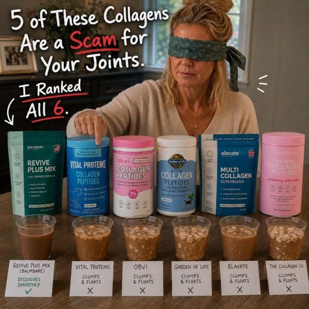
10. BalmBare (page: “Amanda Foster”)
Hook“I spent a year buying collagen that did absolutely nothing for my joints.” On-image text: “5 of These Collagens Are a Scam for Your Joints. I Ranked All 6.”
CTAButton: Shop Now. Copy: “Click to read the honest breakdown and the one switch that finally worked 👇”
AvatarAdults 40–65 with stiff knees (Foreplay). EmotionFrustration at wasted money.
OfferLeads to an advertorial. No offer in the ad copy.
ProofSide-by-side demo of 6 tubs with labeled cups. Specific flaws (“One carries a heavy metal warning on its own label.”).
HalbertA comparison is a demonstration. The reader feels like she's getting the inside story, and the winner is shown, not claimed.
Crowd ✓ Emotion ✓ Hook ✓ Promise ✓ Proof ✓ Offer ~ Risk reversal ✗ CTA ✓
For BWLine up 5 filters in one photo: pitcher, fridge filter, shower head, under-sink RO, BW whole-home. Headline: “5 water filters South Florida homes buy. Only 1 reaches every tap.” Each label says only which taps it covers, which BW can back. Ranking “scams” is a claim BW can't make.
Category 2: Home service lead gen (free tests, inspections, estimates)
1. Culligan (Kansas City dealer)
Hook“Kansas City homeowners: Still buying products for dry-feeling skin and rough-feeling hair?” Video: “You don't need another beauty product You need better water.”
CTAButton: Get Offer. Copy: “Book your Free In-Home Water Test with your local Culligan team today.”
AvatarKansas City homeowners frustrated with dry skin and straw-like hair. EmotionFrustration at products that don't work.
OfferFree in-home water test.
ProofMechanism only: calcium and magnesium buildup (“leaves a stubborn film on your skin and hair”). No reviews in the ad.
HalbertIt moves money the reader already spends on the shelf over to the real cause. The crowd is named in the first two words, and the CTA is one free, clear step.
Crowd ✓ Emotion ✓ Hook ✓ Promise ✓ Proof ~ Offer ✓ Risk reversal ✓ CTA ✓
For BWNear copy-ready for BW: “Miami-Dade homeowners: still buying products for dry skin and frizzy hair? Before you add another conditioner to the shelf, test your water.” CTA: “Get your FREE in-home water test” (confirmed on biscaynewater.com, covering 14 contaminants).
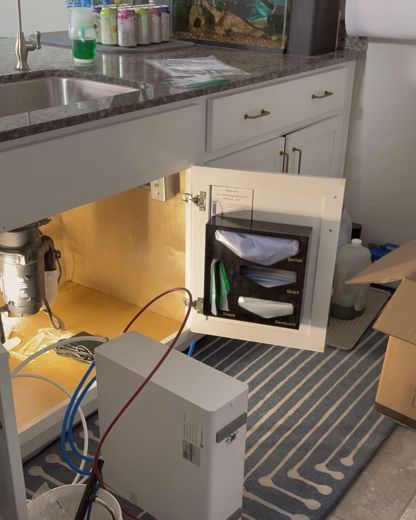
2. Goettl Air Conditioning & Plumbing
Hook“Three years of thinking their water was fine...” Customer on camera: “We've lived in this house for three years thinking our water was fine. It wasn't!”
CTACopy: “Schedule your free water test. You might be surprised what's in yours.” (Foreplay lists the button as BOOK_TRAVEL, likely a “Book” button.)
AvatarHomeowners who assume their water is fine. EmotionShock, then the relief of feeling safe (“now I finally feel comfortable with water at my own home”).
OfferFree water test. Sister ad (Phoenix) lists what gets tested: chlorine, hardness and TDS, by a licensed plumber, with results on the spot and “no pressure.”
ProofReal customer testimonial. She says they found chlorine “off the chart” and added an under-sink RO plus a softener.
HalbertThe customer delivers the hook, so it reads as truth, not a pitch. Goettl runs the free water test across many cities (Austin, Phoenix, Las Vegas, San Antonio in this pull; San Antonio's has run 68 days). That suggests a repeatable play, though it isn't proof of profit.
Crowd ~ Emotion ✓ Hook ✓ Promise ✓ Proof ✓ Offer ✓ Risk reversal ✓ CTA ✓
For BWFilm one real BW customer (with permission) saying “We thought Coral Gables water was fine.” Cut to the tech running the 14-contaminant test in their kitchen.
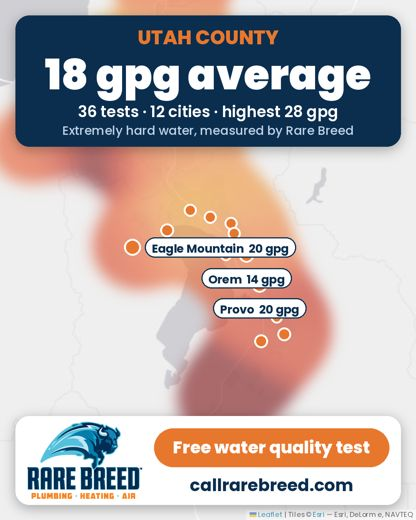
3. Rare Breed Plumbing, Heating, and Air
Hook“We've tested the water on your street. See how hard it is.” Image: “Utah County 18 gpg average · 36 tests · 12 cities · highest 28 gpg”.
CTAButton: Book Now. Copy: “Want to know for sure? Book a free water quality test.”
AvatarLocal homeowners (Utah's Wasatch Front). EmotionCuriosity and local pride (“your street”).
OfferFree water quality test, plus an online hardness map.
ProofTheir own field data: “Our hardness map shows 178 real water tests across 40 Wasatch Front cities.”
HalbertProof is the company's own measurements, which is about as believable as proof gets. It only started Nov 12 (10 days), so treat it as a new test worth watching, not a proven winner.
Crowd ✓ Emotion ✓ Hook ✓ Promise ✓ Proof ✓ Offer ✓ Risk reversal ✓ CTA ✓
For BWIf BW logs its test results, map them by city (Coral Gables, Pinecrest, Weston, Fort Lauderdale…) as “South Florida hardness by neighborhood.” The site already has a “View Customer Map” feature. Use only real test numbers, which owners need to confirm.
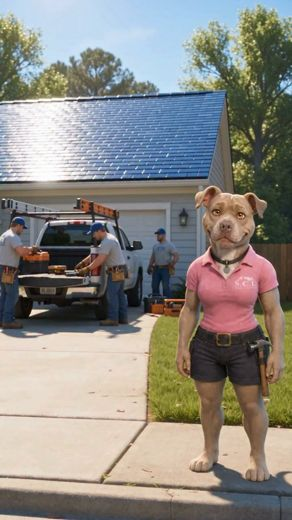
4. SCI Roofing and Construction
Hook“[Duluth Homeowners] Same storm. Same street. Same homeowners policy. So why did your neighbor get a brand new roof — and you got a denial letter?”
CTAButton: Learn More. Copy: “Free roof inspection for Georgia homeowners. Tap the link, book yours, and let's find out what your roof is really owed.”
AvatarGeorgia homeowners with denied roof claims (separate versions for Duluth, Gainesville and McDonough). EmotionUnfairness and envy of the neighbor.
OfferFree roof inspection and full claim documentation.
ProofBrand claim: “over 9 out of 10 get approved.” Explains what the neighbor's roofer did differently.
HalbertIt names a villain (the insurer's “first answer”) and compares the reader to a neighbor. City-named versions make each one feel local. It has run 87 days in this window.
Crowd ✓ Emotion ✓ Hook ✓ Promise ✓ Proof ~ Offer ✓ Risk reversal ✓ CTA ✓
For BW“[Weston Homeowners] Same city water. Same street. So why is your neighbor's shower glass still clear?” Make one version per city from BW's site list.
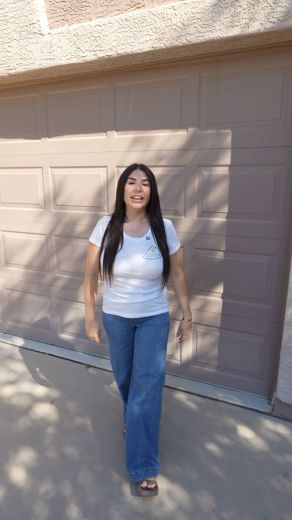
5. Arizona Cooling and Heating Specialists
Hook“Valley Homeowners: Before you spend thousands on an AC repair, get a second opinion...”
CTAButton: Learn More. Copy: “👇 Fill out the form below to request your FREE second opinion, and our team will reach out to you”
AvatarHomeowners holding a quote that “just didn't feel right.” EmotionSuspicion and fear of being ripped off.
OfferFree, no-pressure second opinion.
ProofWeak: “local, family-owned.” Has a no-upsell checklist.
HalbertThe hungriest crowd is people already shopping. It turns that into a free next step. “Trust your gut” agrees with what they already feel. Ran 90 days, the full window.
Crowd ✓ Emotion ✓ Hook ✓ Promise ✓ Proof ✗ Offer ✓ Risk reversal ✓ CTA ✓
For BWShopping is BW's #1 tagged objection (53 calls in the Objections review). Ad: “Got a water filter quote? Get a free second opinion.” Proof is the site review from David M.: “Three quotes, three completely different recommendations. Biscayne Water was the only one that actually tested the water before pitching me a system.” Confirm that review is real first.
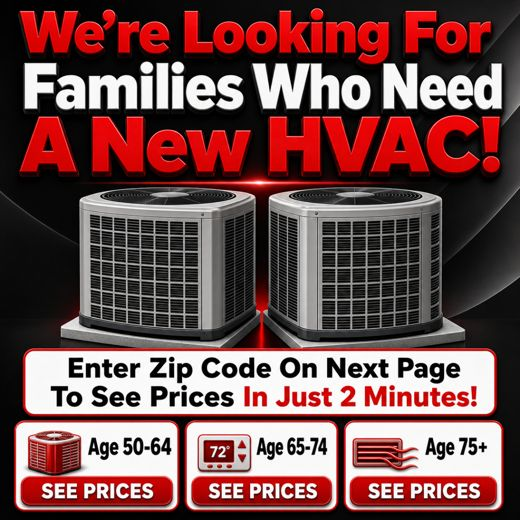
6. NextGen HVAC (runs to an aggregator page)
Hook“Honest question: Do you actually know how old your heater is?” Image: “We're Looking For Families Who Need A New HVAC! Enter Zip Code On Next Page To See Prices In Just 2 Minutes!” with age buttons (50–64 / 65–74 / 75+).
CTAButton: See Details. Copy: “Click the link below, spend one minute, and find out your number.”
AvatarHomeowners 30–65 (Foreplay). The image buttons target 50+. EmotionDread of a breakdown on the worst night, and of a high-pressure sales visit.
OfferA free online estimate tool. “No sales calls. No credit card. No spam.”
ProofLifespan claim (“built to last 12–15 years”). A vivid story of the “dreaded week” of in-home sales visits.
HalbertLong copy that paints the disaster scene, then names the reader's second fear (the salesman) and removes it. It links to urbanhomerenewal.com, a lead-gen funnel, not one contractor.
Crowd ✓ Emotion ✓ Hook ✓ Promise ✓ Proof ~ Offer ✓ Risk reversal ✓ CTA ✓
For BW“Honest question: do you know what's in your water heater right now?” Tell the scale story, then send them to the 60-second quiz. Keep the ad price-free.
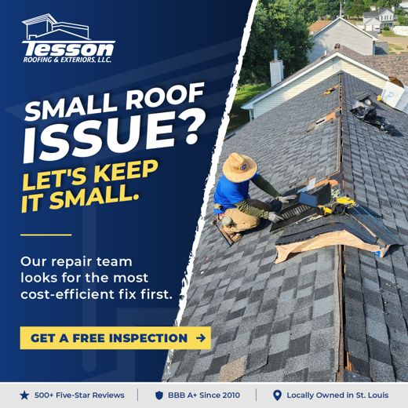
7. Tesson Roofing & Exteriors
Hook“Small leaks lead to big bills. 🚨” Image: “Small roof issue? Let's keep it small.”
CTACopy: “👇 Claim your free inspection below!” Image button: “Get a free inspection →”.
AvatarSt. Louis homeowners with a small roof problem. EmotionFear of a small problem becoming a big bill, and distrust of upsells.
Offer“100% Free Roof Inspection + Photo Report.”
ProofImage footer: “500+ Five-Star Reviews” and “Locally Owned In St. Louis.” Positioning: “we fix standard repairs, not unnecessary full replacements.”
HalbertIt promises a real thing you get (a photo report) and takes an anti-upsell stance, which is the strongest trust move in home services.
Crowd ✓ Emotion ✓ Hook ✓ Promise ✓ Proof ✓ Offer ✓ Risk reversal ✓ CTA ✓
For BW“Free in-home water test + your results explained on the spot.” BW's FAQ says it will “only recommend a system if there's an actual problem.” Make that line the headline.
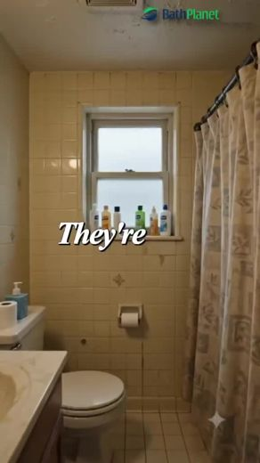
8. All County One Day Bath
Hook“Don't start your bathroom remodel until you read this.” Video: “Before you spend $25,000 or more on a bathroom remodel watch this first.”
CTAButton: Learn More. Copy: “Click below to schedule your FREE design consultation.”
AvatarNew Jersey homeowners planning a bathroom remodel. EmotionFear of a costly mistake.
OfferFree design and cost review, “No Money Down and 0% interest payment options,” and a lifetime warranty (from transcript).
ProofStakes: “A poorly planned bathroom can cost you an extra $5,000 to $10,000 in unnecessary upgrades.”
HalbertA warning hook (“don't… until”) stops people mid-decision. Financing is pitched as a way to cut risk, not as a price.
Crowd ✓ Emotion ✓ Hook ✓ Promise ✓ Proof ~ Offer ✓ Risk reversal ✓ CTA ✓
For BW“Don't buy a water filter until you watch this.” Cover 3 mistakes: buying without a test, a pitcher for a whole-house problem, and an undersized tank. Close with “$0 down, 0% interest, payments as low as $69/mo” (see the financing gap note).
9. Westbound Plumbing & Drain
HookVideo: “Phoenix homeowners, if you're dealing with slow drains reoccurring clogs or backups around your home right now…”
CTAButton: Get Offer. Copy: “Tap below to claim your $79 Drain Clearing + FREE Camera Inspection Special…”
AvatarPhoenix homeowners with slow drains. EmotionAnnoyance, and distrust of salespeople.
OfferLow-price entry offer plus a free camera inspection.
Proof“255+ 5-Star Reviews,” “Licensed, Bonded & Insured,” family-owned. The owner says: “We don't have salespeople coming to your home trying to sell you repairs we dont need.”
HalbertThe owner's face and voice, plus “we'll show you exactly what we find,” make an invisible problem visible.
Crowd ✓ Emotion ✓ Hook ✓ Promise ✓ Proof ✓ Offer ✓ Risk reversal ✓ CTA ✓
For BWPut an owner on camera: “I'm Doug from Biscayne Water. We test your water in front of you, and if there's no problem, we tell you.” Leave the price out and keep the free test.
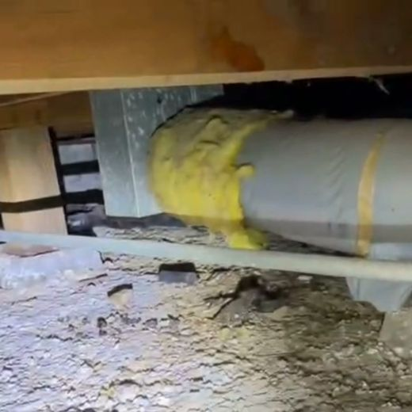
10. Attic Pros
Hook“Hearing scratching noises in your attic? Don't wait - rodents can multiply quickly and cause costly damage.”
CTAButton: Get Quote. Copy: “Book your FREE inspection & estimate today!”
AvatarHomeowners hearing noises in the attic. EmotionAlarm and disgust.
OfferFree inspection and estimate, with a 3-step list of what they do.
Proof“⭐ 4.8★ Rated with 2,200+ Google Reviews.”
HalbertThe hook is a sense the reader has already had (the sound). Big review numbers do the trust work, and the 3 steps show exactly what happens next. Ran 88 days.
Crowd ✓ Emotion ✓ Hook ✓ Promise ✓ Proof ✓ Offer ✓ Risk reversal ✓ CTA ✓
For BWUse sense hooks: “Smell chlorine when you shower?” / “White crust on your faucet?” Then BW's 3 steps from its FAQ: test 14 contaminants on the spot, walk you through results, only recommend a system if there's a real problem. Use one verified review count (see gaps).
The 5 strongest patterns
“Kansas City homeowners:”, “IF YOUR CHILD HAS ECZEMA”, “How Black Men Are…”, “[Duluth Homeowners]”. The best ads filter before they sell, by place, identity or a symptom the reader recognizes.
The beauty-product shelf becomes a water problem. “Washing less” is the wrong answer. Five collagens were the wrong type. The quote you're holding may be wrong. The reader's current fix becomes proof the new one is needed.
Free water test with results on the spot, a photo report, a camera inspection, a second opinion, a quiz with no email. Each says “no pressure” or “we only fix what's needed.”
“Clear Skin or Refund”, “A Doctor's Promise: 120 Nights”, “risk-free for 120 days”, “60-day money-back guarantee”, “FREE inspection.”
A spaghetti-strand demo, 6 tubs ranked, a hardness map from 178 real tests, an owner on camera showing the pipe camera, a customer saying “It wasn't!”
5 original Biscayne Water ad concepts
BW rules applied: no price in any ad. Financing wording only as “$0 down, 0% interest, payments as low as $69/mo.” The free in-home water test is confirmed on biscaynewater.com. Branding: navy #053659, coral #FAB3B4, yellow #FBBF24, Poppins/Montserrat (from the site).
1. “Before another beauty product…”
Hook“Miami-Dade homeowners: still buying products for dry skin and frizzy hair? Before you add another conditioner to the shelf, test your water.”
AngleFrustration at wasted money on products that don't fix the cause. Written for the mom who buys for the whole family.
OfferFree in-home water test (confirmed on biscaynewater.com: a technician tests 14 contaminants on the spot, no obligation).
CTA“Get your free in-home water test.”
2. “Same city water. Same street.”
Hook“[Coral Gables Homeowners] Same city water. Same street. So why is your neighbor's shower glass still clear?” (one version per city: Pinecrest, Weston, Aventura, Fort Lauderdale…)
AngleCuriosity and neighbor comparison, with local pride.
OfferFree in-home water test, with results explained on the spot. If BW has logged test data, add a real city-by-city hardness map (owners to confirm).
CTA“See what's in your water.”
3. “Got a water filter quote? Get a second opinion.”
Hook“Got a water filtration quote? Before you sign, get a free second opinion from the team that tests first.”
AngleSuspicion and fear of overpaying. Aimed at BW's #1 objection (shopping around).
OfferFree in-home water test and a flat, written quote (both on BW's site). Proof: the David M. site review, after owners confirm it's a real, approved review.
CTA“Get your free second opinion.”
4. “5 filters. Only 1 reaches every tap.”
Hook“5 water filters South Florida homes buy. Only 1 reaches every tap.” (one photo: pitcher, fridge filter, shower head, under-sink RO, whole-home)
AngleWasted money and clarity: the inside story on what each one really covers.
OfferFree in-home water test. Financing line if used: “$0 down, 0% interest, payments as low as $69/mo.”
CTA“Take the 60-second water quiz.” (biscaynewater.com/quiz)
5. “Nobody tells you it happens gradually.”
Hook“Nobody tells you it happens gradually. A little crust on the faucet. Spots on the glass. Then one morning, the water heater quits.”
AngleDread of a slow problem turning into a sudden, expensive one. Peace of mind for the home.
OfferFree in-home water test, plus a 10-year tank and valve warranty on BW systems (site).
CTA“Book your free water test before it gets worse.”
Gaps and caveats
- Credits: this job used 846 Foreplay credits (30 searches, 1 credit per ad returned). The account had 6,962 credits left at the end, shared with the swipe file v2 job running at the same time.
- Running time is capped by the filter. Doug's “last 90 days” filter means the longest any ad can show is about 90 days. Many health ads show the same start date of Aug 24, 2026, the window's first day. That could be the real start date or Foreplay's first sighting. Check the start date in the Meta Ad Library link before treating any ad as a proven winner. Longevity is a reason to look closer, not proof of profit.
- No performance data. Neither Foreplay nor the Meta Ad Library shows spend, CTR or sales. The Halbert checks (✓ / ~ / ✗) are my judgment of the copy, not metrics.
- Source: all 20 ads came from Foreplay's ad library. Foreplay had enough home-service ads (429 unique in this pull), so I didn't add any from Meta Ad Library pages. Each ad has a Meta Ad Library link to check it live.
- Brand and offer claims are the advertisers' own. Examples: 270,000+ users, “61% less shedding,” “over 9 out of 10 get approved.” Some health pages (H06, H10) are advertorial or persona pages, so their first-person stories can't be verified.
- Financing mismatch on BW's site. The financing page today shows “$111/mo, systems from $3,992, 0% interest for 36 months,” not $69/mo. Before any ad uses “$0 down, 0% interest, payments as low as $69/mo,” owners should confirm the $69/mo plan exists and update the site to match.
- Review count mismatch on BW's site. The header says “5.0—STAR RATED BY 100+ CUSTOMERS,” while the reviews section and quiz say “75+ Google reviews.” Pick one verified number before using it in ads.
- Free in-home water test is confirmed on biscaynewater.com (home page, FAQ and quiz). The site testimonials (Sofia R., David M., Janelle T.) and the eczema line in Sofia R.'s review should be confirmed as real and approved before an ad quotes them. Health claims about skin conditions need care.
Method: Foreplay Discovery API, live=true, start_date ≥ 2026-08-24, order=longest_running, English. Health niches: health/wellness, beauty, medical, parenting, kids/baby. Home-service niches: service business, home/garden, real estate, other. Search terms: thinning hair, hair loss, acne, wrinkles, eczema, sleep, insomnia, my kids, toddler, bloating, menopause, joint pain; water test, free water test, water softener, water filtration, hvac, air conditioning, roof, roof inspection, pest control, termite, plumber, water heater, bathroom remodel, kitchen remodel, free estimate, free inspection, free in-home consultation. “Days observed” is Foreplay's running-duration count.